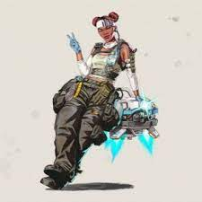
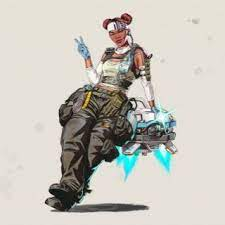

Heros
Apex Legends has a diverse cast of 22 characters. Many of the character designs are based on Titanfall.
Bloodhound
Gibraltar
Lifeline
Pathfinder
Wraith
Bangalore
Caustic
Mirage
Octane
Wattson
Crypto
Revenant
Loba
Rampart
Horizon
Fuse
Valkyrie
Seer
Ash
Mad Maggie
Newcastle
Vantage

 

 Shortly after Apex Legends' launch, it was seen as a potential esport competition, and Respawn had anticipated establishing events once the game had been established. As early as March 2019, various esport team sponsors began to assemble Apex Legends teams for these competitions.[95] ESPN launched its EXP program to showcase esports events running alongside other ESPN-managed sporting events. The first such event was the EXP Pro-Am Apex Legends Exhibition, run on July 11, 2019, alongside the 2019 ESPY Awards.[96] An EXP Invitational event with a $150,000 prize pool took place alongside the X Games Minneapolis 2019 from August 1 to 4, 2019. However, as a result of the El Paso and Dayton mass shootings that occurred over that weekend, both ESPN and ABC opted to delay broadcast of the event out of respect for the victims of the shootings.[97]
Respawn and EA announced the Apex Legends Global Series in December 2019, consisting of several online events and twelve live events during 2020 with a total US$3 million prize pool. The Global Series follows a similar approach as Fortnite Battle Royale by using multiple tiers of events to qualify players. Players will qualify for the Global Series through Online Tournaments. Top players and teams from these events will be invited to either regional Challenger events or to global Premier events, where the winners have a chance for a cash payout and invitations to one of the three major events. Three Major events will be held for one hundred teams to accumulate points in the Global Series to vie for placement in the final Major event as well as part of a US$500,000 prize pool. The fourth Major event had up to sixty teams competing for a portion of a US$1 million pool.[98]
Shortly after Apex Legends' launch, it was seen as a potential esport competition, and Respawn had anticipated establishing events once the game had been established. As early as March 2019, various esport team sponsors began to assemble Apex Legends teams for these competitions.[95] ESPN launched its EXP program to showcase esports events running alongside other ESPN-managed sporting events. The first such event was the EXP Pro-Am Apex Legends Exhibition, run on July 11, 2019, alongside the 2019 ESPY Awards.[96] An EXP Invitational event with a $150,000 prize pool took place alongside the X Games Minneapolis 2019 from August 1 to 4, 2019. However, as a result of the El Paso and Dayton mass shootings that occurred over that weekend, both ESPN and ABC opted to delay broadcast of the event out of respect for the victims of the shootings.[97]
Respawn and EA announced the Apex Legends Global Series in December 2019, consisting of several online events and twelve live events during 2020 with a total US$3 million prize pool. The Global Series follows a similar approach as Fortnite Battle Royale by using multiple tiers of events to qualify players. Players will qualify for the Global Series through Online Tournaments. Top players and teams from these events will be invited to either regional Challenger events or to global Premier events, where the winners have a chance for a cash payout and invitations to one of the three major events. Three Major events will be held for one hundred teams to accumulate points in the Global Series to vie for placement in the final Major event as well as part of a US$500,000 prize pool. The fourth Major event had up to sixty teams competing for a portion of a US$1 million pool.[98]